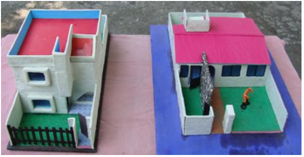
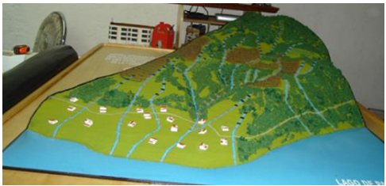
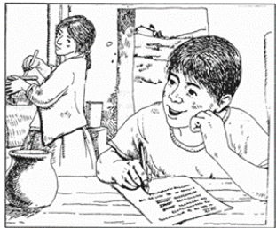
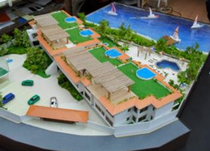

CAPÍTULO 1:
INTRODUCCIÓN A LAS MAQUETAS
Es la representación tridimensional, a escala, de una obra compleja. En general, para la construcción de edificios, plantas industriales, barcos, aviones o piezas específicas, se utilizan planos. Los planos son representaciones a escala, en dos dimensiones, de la obra que se pretende construir o se ha construido. En algunos casos, la información que suministran los planos es insuficiente, por lo cual se recurre a las maquetas. Su utilización, desvela problemas constructivos que solo con los planos, no se habrían visto. En los planos, la visión espacial no es intuitiva, en las maquetas sí.

Fuente Imagen: El Autor
El objetivo, es implementar en los alumnos con una base conceptual y procedimental que, sin duda no puede ser suficiente sin el complemento insustituible de un desarrollo teórico - práctico en el ámbito del taller, este incluye una explicación teórica, con la proyección de imágenes documentando parte de la producción de nuestros cursos de análisis proyectual, además de ejemplos de la producción contemporánea. “Las maquetas constituyen excelentes medios didácticos para la enseñanza de diferente disciplinas y asignaturas técnicas, pues nos brindan una representación muy aproximada a la realidad objetiva, pudiéndose hacer sus representaciones a través de planos y en un ordenador como elemento simulador a través de su representación en modelos tridimensionales del terreno, los cuales ofrecen la posibilidad de llevarnos a través del empleo de novedosas tecnologías que nos permiten adentrarnos en el amplio mundo de la informatización de la ciencia”. (Pérez, López y González 1998). La mayor parte de las veces, se recurría a ella, una vez acabado el diseño, con el objeto de complementar la presentación de un proyecto, tradicionalmente confiada a los geometrales y fundamentalmente a la perspectiva. El objetivo de la maqueta, es que debería cumplir toda forma de documentación, pueda ser empleada no solo por su autor, sino comprensible a una extendida audiencia.

Fuente Imagen: si_arquitectura@yahoo.com.mx
Es un proceso de creación visual apegada a la realidad. También trata de armonizar en su relación, el entorno humano, desde la concepción de objetos, hasta el urbanismo, a diferencia de la pintura y la escultura, que son la realización de visiones personales y de los sueños de un artista, el diseño cubre las exigencias e impulsa la creatividad y el talento.
Son los elementos que no son visibles, como, por ejemplo: ideas y conceptos de algo que se pretende construir. Estos elementos, principalmente, dependerán de alguna u otra forma de los planos de arquitectura, y de la necesidad del diseñador.

Fuente Imagen: http://www.aeet.org/ecosistemas
Como su nombre lo indica, son visibles y forman la parte más prominente, de un diseño, porque son los cuales realmente, son visibles, y estos a su vez, ayudan demasiado al ser humano,pues está comprobado que el ser humano, comprende mejor las cosas, cuando las observa directamente, a diferencia de si solo se las imaginara, e incluso se las mencionaran, ejemplo; forma, medida, diseño, color, textura, entre otros.

Fuente Imagen: http://maquetas-profesionales.blogspot.com
En este grupo de elementos, gobierna principalmente, la ubicación e interrelación de formas en un diseño, algunos pueden ser percibidos como la dirección y la posición, otros pueden ser sentidos como el espacio y la gravedad, principalmente hablamos de espacios, pero basándose en el diseño de los planos de arquitectura, es decir la relación diseño-espacio.

Fuente Imagen: http://www.maquetasprofesionales.blogspot.com
Estos elementos, subyacen (debajo) el contenido y alcance de un diseño. Representa el significado de la función, es decir, cuál es y será la finalidad y uso de la maqueta. Cuando hablamos de prácticos, nos referimos principalmente, al talento y creatividad que el artista o maquetista puede proyectar en la elaboración de maquetas.

Fuente Imagen: http://www.maquetasprofesionales.blogspot.com
La finalidad principal de las maquetas, es un medio o modelo, el cual, nos permitirá, hacer correcciones y modificaciones, del proyecto, con el objetivo de economizar costos, tiempo y calidad del trabajo. La maqueta no modifica una situación, sino aporta un medio capaz de sintetizar en un único elemento, la mayor parte de los elementos que representan el proyecto. Tanto como los medios y materiales empleados, también se utiliza para la representación de un proyecto, o un edificio, o conjunto de estos, cuya finalidad es mostrar cómo será, como es o como fue, es como un dibujo en borrador, sobre el cual, podemos borrar y volver a dibujar cada ajuste del proyecto, con economía de medios, refiriéndome con el término medios a los materiales y el tiempo empleados.

Fuente Imagen: : si_arquitectura@yahoo.com.mx
- 1º La maqueta sustituye al dibujo en la etapa inicial, dejando a este el rol final de convertir a los volúmenes y los espacios en planos bidimensionales que permitan su construcción.
- 2º Wolfgan Knoll, autor de "Maquetas de Arquitectura", afirma en el prólogo que "Las maquetas complementan a los dibujos".
- 3º Entender a la maqueta como un instrumento de diseño, en donde pueden analizarse y estudiarse los volúmenes.
- 4º La definición de Knoll, “el dibujo no es integro ni perfecto, sino que necesita del complemento de la maqueta para ser, por sumatoria de ambos sistemas, una representación íntegra de la arquitectura”
- 5º La definición de Knoll, puede sugerir que la maqueta está subordinada al dibujo, en el sentido de que el dibujo siempre la precede. Sin embargo, Ghery nos demuestra que puede invertirse este parámetro tradicional
- 6º la maqueta tiene capacidad para constituir por sí sola, un sistema de comunicación aún más eficiente que el dibujo, tal como nos lo confirmó Wright. Este punto lo desarrollaremos más adelante.

Fuente Imagen: : si_arquitectura@yahoo.com.mx
- 1º Cuando no se conoce nada de maquetas, suele ser un poco laborioso, su elaboración.
- 2º En ocasiones el materialno se encuentra fácilmente.
- 3º El material a veces es caro.
- 4º Si no se le proporcionan los cuidados necesarios, pueden sufrir deformaciones.
- 5º En caso de que no se proteja, se le debe dar mantenimiento, principalmente del polvo.

Fuente Imagen: : si_arquitectura@yahoo.com.mx
Fuente Imagen: : si_arquitectura@yahoo.com.mx
Los cuidados en las maquetas son muy importantes, y en todo, pues, al fin y al cabo, nos cuesta, tanto económicamente, como humanamente, ya que nos esforzamos, por la realización de las maquetas, y sería nada bueno, ni correcto, descuidar algo valioso, como lo es la maqueta. Es muy importante, tener en cuenta el cuidado, en este caso, con nuestras maquetas, porque la idea y objetivo, no es hacer una maqueta para adorno, ni mucho menos, para algo pasajero, la idea es que, sea algo más que eso, deberá ser un logro más para nosotros e incluso, un modelo de avances, donde todos los días aprendemos cosas nuevas.
- ¿Cuáles son los cuidados?
- 1º En ocasiones el materialno se encuentra fácilmente.
- 2º Libre de la humedad.
- 3º Rayos directos solares.
- 4º Fuera del alcance de los niños.
- 5º Ponerla en un lugar, donde no podamos atropellarla o estropearla.
- 6º Colocarla en un Lugar o espacio adecuado.
- 7º Cuidado y seguridad en su traslado.
Como lo mencionamos al inicio, la maqueta es la representación a escala reducida de un edificio, barco, avión, etc… todo trabajo a escala, es una maqueta de lo real o se pretende construir. La maqueta es el complemento de los planos, existen maquetas virtuales, y son bastantes buenas, pero nunca las compararemos, con las maquetas arquitectónicas, ya que, en estas, los errores y modificaciones se apegan más a la realidad y son más visibles, porque podemos visualizar, todos los elementos y hacer en ella “n” pruebas y modificaciones.
¿Por qué como herramienta? Por qué tiene la capacidad de constituir, por si sola, un sistema de comunicación aún más eficiente que el dibujo, como nos menciona Wrigth. Knoll, nos sugiere el termino complementario, significa lo que se añade a otra cosa, para hacerla integra o perfecta. Entonces, nos menciona, que el dibujo no es integro ni perfecto, sino que necesita del complemento de la maqueta para ser, por sumatoria de ambos sistemas, una representación integra de la arquitectura.
Históricamente, la maqueta en arquitectura ha sido utilizada más como un medio de comunicación que, como una herramienta de diseño. La mayoría de las veces, se recurría a ella, una vez acabado el diseño, con el objeto de complementar la presentación de un proyecto, tradicionalmente confiada a los geometrales y fundamentalmente a la perspectiva. El proceso de diseño, se aborda desde dos sistemas complementarios: el croquis que constituye el medio más rápido para la expresión espontánea, y las maquetas de trabajo, en las cuales se modelan la forma y se construye el espacio. La maqueta fue introducida desde el comienzo, utilizándola como herramienta de diseño, esta proporcionó al diseñador, un poderoso medio para crear y analizar formas y espacios. Siempre formó parte del arsenal de medios de representación, de los cuales se valieron los diseñadores de todos los tiempos, para mostrar los proyectos, pero en la generalidad de los casos, estaba ausente en las fases de concepción del proyecto, en donde los geometrales y las perspectivas, constituían las herramientas que signaban a los productos surgidos de los tableros. La maqueta, aparece durante la fase de desarrollo del diseño, solo cuando los diseñadores consideran a la arquitectura como un proceso creativo en el cual, la forma no es la mera consecuencia del levantamiento de una planta, o de traducir los dibujos a un modelo tridimensional, Como afirma Knoll, sino el producto de un proceso estético, en el que son trabajadas libremente por las manos del diseñador, quien va encajando las partes , en una secuencia similar a aquella con la cual se construye la obra. La creación de formas como una actividad libre de diseño, como práctica arquitectónica no subordinada al paradigma, la forma sigue a la función, este fue sustentado por el movimiento moderno, y la reconsideración de la arquitectura como proceso estético, fundamentalmente creativo, reencuentran en la maqueta, un instrumento idóneo para la generación y el estudio de la forma y el espacio. Lo expuesto, demuestra que la maqueta tiene algunas ventajas evidentes sobre el dibujo (entre otras razones por su relación costo-eficacia). Es un sistema más eficiente que el bosquejo. Pero no por ello, podemos ni siquiera imaginar a la maqueta, como un sistema autosuficiente e independiente del mismo. El dibujo no es sustituible, y la maqueta constituye un sistema integrado en donde cada componente es interdependiente y complementario con respecto al otro. Sin embargo, cada sub sistema posee características propias, (Wolfgan Knoll).
Si el dibujo continuó siendo para el diseñador, el principal medio de comunicación de sus ideas, entendiéndolo como la herramienta natural de expresión e introspección en diseño, la maqueta no modifica esta situación, sino aporta un medio capaz de sintetizar, en un único elemento, la mayor parte de los elementos que representan el proyecto. En esta capacidad de síntesis de una única pieza abarcable, desde infinitos puntos de vista, reside la mayor diferencia entre la maqueta y el dibujo. De hecho, para el ojo inexperto, la lectura de geometrales, no siempre permite la comprensión del ciento por ciento de un proyecto, ya que los códigos de representación gráfica, requieren para su correcta interpretación un alto grado de entrenamiento, y, por ende, siempre resulta necesario apoyarse en croquis o perspectivas. Precisamente, porque lo que es más difícil de percibir es el espacio. Y es aquí donde la maqueta se revela más accesible, pues como código de comunicación visual, en lugar de valerse de proyecciones en planos, utiliza los propios elementos de arquitectura a escala, en una composición que, resulta en consecuencia comprensible y verificable, aún por el ojo inexperto. Las maquetas expresan cada una de las obras, como no lo hubiesen hecho los mejores dibujos, básicamente, porque la maqueta permite entender en una sola operación, la totalidad de la obra de arquitectura, a cualquier observador no entrenado en la lectura de geometrales, más abstracto. El CAD, nos permite obtener visualizaciones en tres dimensiones, desde infinitos puntos de vista de los espacios interiores, e inclusive, generar un recorrido ordenado a través de los mismos, por lo cual, estamos prácticamente en presencia de un sistema que, potencialmente puede, favorecer el desarrollo tecnológico y reducción de costos, mediante el reemplazo, en el mediano plazo, a la maqueta física o tangible, por la maqueta electrónica, y de hecho lo está haciendo. 41 Pero, ni el CAD, ni la realidad virtual, podrán sustituir a la maqueta de trabajo, como no pueden sustituir al croquis, o a los esquemas conceptuales. Por esa razón, como hay una maqueta conceptual que está en el umbral inferior, y es aquella que se genera Simultáneamente con los primeros croquis, en el escalón más elevado, están las maquetas de ejecución empleando la clasificación de Knoll, en las cuales la precisión y el detalle son las características diferenciales. (Wolfgan Knoll).